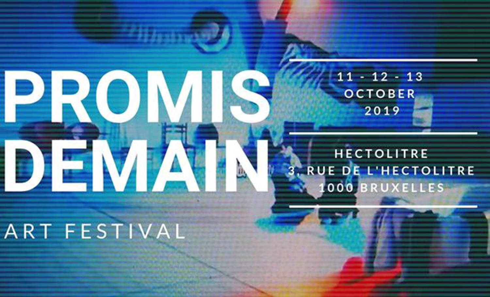

PROMIS DEMAIN
Art Festival
link: kisskissbankbank
link:facebook event

› Toutes les informations ci-dessous (FR, NL & ENG)
› Alle informatie hieronder (FR, NL & ENG)
› All of the details are available below (FR, NL & ENG)
[FR]
─ LE FESTIVAL ─
PROMIS DEMAIN, c'est un festival pluridisciplinaire que nous organisons pour la première fois.
PROMIS DEMAIN, c'est initialement une compagnie, un collectif : un point de rencontre, un « espace » de création.
Nous mêlons les disciplines artistiques sous toutes leurs formes, avec l’envie de démocratiser ces formes d’expression.
Pendant trois jours, vous aurez l’occasion de découvrir le travail de chacun des membres de la compagnie à travers des performances, des spectacles, des expositions, mais aussi d’expérimenter, grâce aux workshops organisés par les artistes eux-mêmes.
L’ensemble de l’événement est basé sur l’implication et la créativité de chacun.
Durant le festival, les participants voyageront d’un spectacle à un autre, d’un univers à un autre.
Pas de thème ou de fil rouge autre que l’envie de partager avec vous un large spectre de créations, de vous faire découvrir différents mondes.
Les spectacles, ateliers, et performances que vous verrez ou auxquels vous participerez seront le fruit d’une résidence qui aura eu lieu tout au long de la semaine précédent le festival.
Détails des spectacles/performances/expositions/workshops & horaires du week-end à suivre très bientôt !
─ PROGRAMMATION ─
》THEATRE
- « Fracture, ou la métamorphose du vide », pièce performative écrite par Leslie Lily Logé, dirigée par Alizée Gaie, avec : Faustine Boissery, Thomas Durcudoy, Armand Droz-Vincent et Leslie Lily Logé
- « Que ferais-je moi de cette épée »,
(approche de la Loi et du problème de la beauté),
libre interprétation du texte original d’Angelica Liddel, par Indira Garcia Reis et Leslie Lily Logé
》DANSE
- « Performance solo », par Chloé Santinacci
- « RetroGrade », par Chloé Santinacci et Marie Fulconis
》PERFORMANCES
- « L'alligator », par Faustine Boissery
- « Poisson » par Chloé Santinacci et Leslie Lily Logé
- « Tatamis » par Indira Garcia Reis, Antoine Makhoul et Colin Doucet
》EXPOSITONS
- Peintures & sculptures, de Mauvaise Charrue
- Photos, de Ophélie Longuepée
- Et d'autres encore, dont nous vous parlerons prochainement !
》TATTOO
Chaque soir, nous invitons un tatoueur bruxellois pour une session de « flash tattoos » créés spécialement pour le festival, en collaboration avec les artistes plasticiens qui exposeront.
- Notre première invitée du week-end :
Garance Mairlove - Handpoke, encre vegan, noir & rouge, qui collaborera sur ses planches de flash avec l'artiste Mauvaise Charrue.
On vous révèle l'identité des deux autres tatoueurs très bientôt, patience!
》WORKSHOPS
- Initiation au Jiu-Jitsu brésilien, par Colin Doucet
- Initiation au travail d’improvisation, par Antoine Makhoul
- Initiation au mouvement, par Chloé Santinacci
- Atelier de création, par Mauvaise Charrue
---
Encore beaucoup d’autres choses prévues tout au long du festival, comme des lectures et des projections, mais une fois de plus, gardons un peu de mystère!
[NL]
─ HET FESTIVAL ─
PROMIS DEMAIN is een multidisciplinair festival dat we voor het eerst organiseren.
PROMIS DEMAIN begon als gemeenschap, als collectief: een ontmoetingsplaats, een ruimte voor creativiteit.
We verenigen verschillende artistieke disciplines binnen één toegankelijk festival.
Drie dagen lang krijg je de mogelijkheid het werk van elk van onze leden te ontdekken aan de hand van performances, spektakelshows en tentoonstellingen, maar ook om zelf het experiment aan te gaan dankzij verschillende workshops georganiseerd door de kunstenaars zelf.
Het festival vertrekt vanuit ieders creativiteit en betrokkenheid.
Gedurende de driedaagse zal de toeschouwer zich samen met ons doorheen verschillende universa begeven.
Zonder thema, zonder rode draad, met als enige richtlijn om samen een zo breed mogelijk scala aan creaties en werelden te exploreren.
De shows, workshops en performances die zullen plaatsvinden zijn het resultaat van een residentie die de week voorafgaand aan het festival plaatsvindt.
Details over het programma en bijhorend tijdschema komen er snel aan!
─ PROGRAMMATIE ─
》THEATER
- « Fracture, ou la métamorphose du vide »,
performatief stuk geschreven door Leslie Lily Logé, geregisseerd door Alizée Gaie,
met : Faustine Boissery, Thomas Durcudoy, Armand Droz-vincent en Leslie Lily Logé
- « Que ferais-je moi de cette épée »,
(Approche de la loi et du problème de la beauté/benadering van de wet en het probleem van schoonheid),
vrije interpretatie van de originele tekst van Angelica Liddel, door Indira Garcia Reis en Leslie lily Logé
》DANS
- « Solo performance », door Chloé Santinacci
- « RetroGrade », door Chloé Santinacci en Marie Fulconis
》OPTREDENS
- « L'alligator », door Faustine Boissery
- « Poisson », door Chloé Santinacci en Leslie Lily Logé
- « Tatami », door Indira Garcia Reis, Antoine Makhoul en Colin Doucet
》EXPOSITIES
- Schilderijen & Sculpturen, van Mauvaise Charrue
- Photos, van Ophélie Longuepée
- En anderen, waarover binnenkort meer
》TATTOO
Iedere avond zal één tattoo-artist een « flash tattoo session ». In samenwerking met de plastische kunstenaars van het festivalmaken zij eenmalig werk voor deze avond.
Als eerste in de line-up:
- Garance Mairlove - handpoke, vegan inkt.
in samenwerking met Mauvaise Charrue
》WORKSHOPS
- Initiatie Bresiliaanse Jiu-Jitsu , door Colin Doucet
- Initiatie improvisatie, door Antoine Makhoul
- Initiatie beweging, door Chloé Santinacci
- Workshop creatie, door Mauvaise Charrue
[EN]
─ THE FESTIVAL ─
PROMIS DEMAIN, is a multi disciplinary festival which is organized for the first time.
PROMIS DEMAIN, initially a company, a « gathering place », but mainly; a « creative space ».
We are mixing artistic disciplines driven by every artistic aspect, wishing to democratize all of these different aspects.
Throughout these three days, you will get a chance to discover every company member's job across performances, shows, and exhibitions. Most importantly, it will be the occasion to experience these activities through workshops organized by these artists.
This event is mainly based on each person’s creativity and involment.
The audience will travel from shows to shows, from a world to another across this festival. No theme or restrictions other than to sharing with you, a large panel of creations and the desire to make you discover all of these worlds.
All the shows, workshops and performances that you will attend, and to which you will participate, will be the source of an area that will happen all along the previous week of the festival.
All the details of the shows/performances/exhibitions/workshops and the schedule of the week end are coming very soon!
─ PLANNING ─
》THEATER
- « Fracture, ou la métamorphose du vide »,
a play by Leslie Lily Logé, directed by Alizée Gaie, starring: Faustine Boissery, Thomas Durcudoy, Armand Droz-Vincent and Leslie Lily Logé
- « Que ferais-je moi de cette épée »,
(approche de la loi et du problème de la beauté/approach of the Law and the issues of beauty),
free interpretation of the original text of Angelica Liddel,
by Indira Garcia Reis and Leslie Lily Logé
》DANCE
- « Performance solo », by Chloé Santinacci
- « RetroGrade », by Chloé Santinacci and Marie Fulconis (company « La Mazane » - Paris)
》PERFORMANCES
- « L’alligator », by Faustine Boissery
- « Tatamis », by Indira Reis, Antoine Makhoul and Colin Doucet
- « Poisson », by Chloé Santinacci and Leslie Lily Logé
》EXHIBITIONS
- Paintings & sculptures, Mauvaise Charrue
- Pictures, Ophélie Longuepée
- And many others, that you will know more about soon!
》TATTOO
Every night, we are inviting a Belgian tattooist for a “flash tattoo” session specially created for this festival, collaborating with plastic artists who will expose.
We will reveal their identity soon enough… be patient!
We can already say that our first guest is :
Garance Mairlove - handpoke, vegan ink, red and black, in collaboration with Mauvaise Charrue.
》WORKSHOPS
- Initiating Brazilian Jiu-jitsu by Colin Doucet
- Initiating improvisation, by Antoine Makhoul
- Initiating Movement by Chloe Santinacci
- Workshop of creation (more info upcoming) by Mauvaise Charrue
---
And many more things will happen; such as readings, projections and some more surprises…!
--------------------------------------------------------------
ARTISTS INVOLVED
Down below are the participants within this festival:
- Leslie Lily Logé
(comedian, author & organizer of the festival) https://www.instagram.com/lilyl_ily/
- Chloé Santinacci
(dancer & organizer of the festival) https://www.instagram.com/santinaccichloe/
- Alizée Gaie
(comedian & stage director) https://www.instagram.com/alizeegaie/
- Indira Garcia Reis
(comedian & producer) https://www.instagram.com/indiragarciareis/
- Faustine Boissery (comedian)
- Thomas Durcudoy (comedian, cirquester)
- Armand Droz-Vincent (comedian) https://www.instagram.com/armanddroz/
- Antoine Makhoul (comedian, stage director)
- Colin Doucet (comedian, athlete)
- Marie Fulconis, company La Mazane
(dancer, choreographer) https://www.instagram.com/mazane_z/
- Sarah Boespflug aka Mauvaise Charrue (plastic artist)
https://www.instagram.com/mauvaisecharrue/
- Ophélie Longuepée (photographer)
https://www.instagram.com/ophelielonguepee/
- Garance Mairlove (plastic artist, tattooist)
https://www.instagram.com/garance.mor/ https://www.instagram.com/garance.mor.ttt/
And soon; many more.. !